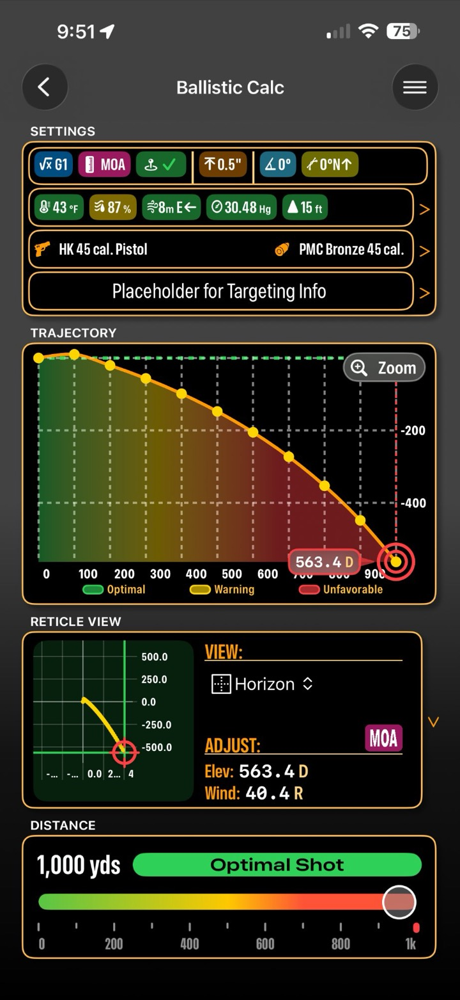
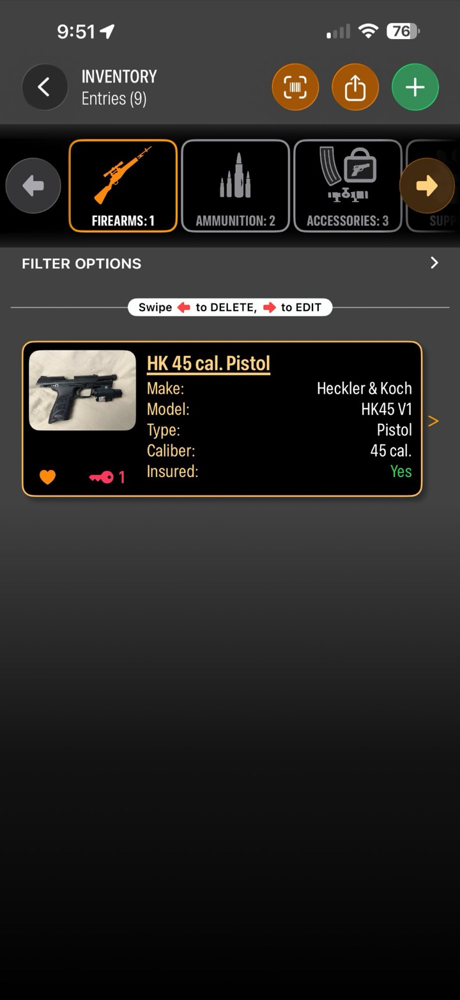
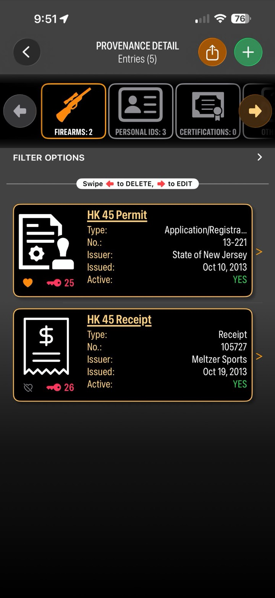

The all-in-one app for serious shooters — a precision ballistic calculator, range logbook, and DOPE card system, plus complete inventory, provenance, and insurance tracking for your collection.
Free during beta. Requires an iPhone or iPad on iOS 26.

From the firing solution to the scorecard, BallisticTracker turns a range day into data you can trust the next time you're behind the rifle.
Compute elevation and windage holds from your firearm, ammo, and live weather conditions.
Photograph your target, tap to mark each shot, and get instant group analysis — mean radius, extreme spread, and group MOA.
Build DOPE cards from your data, then confirm them against real results. Green check when it holds, a flag when it's time to re-zero.
Auto-pull live weather and your range location for every session — or enter any value by hand.


More than a calculator — a permanent, private record of every firearm you own and everything that matters about it.
Catalog firearms, ammunition, and accessories with photos and full detail.
Keep a lasting record of each firearm's history and documentation.
Track coverage and policies so your collection is always accounted for.
Export sessions, DOPE cards, and records as polished PDFs to print or share with a coach.
BallisticTracker has no ads, no trackers, and no data sales. Your records sync privately through your own iCloud account — never our servers. Weather comes from Apple WeatherKit, and your location is used only to tag your range sessions.
Join the TestFlight beta and help shape BallisticTracker. Free while in beta.
✈︎ Join the Beta on TestFlight